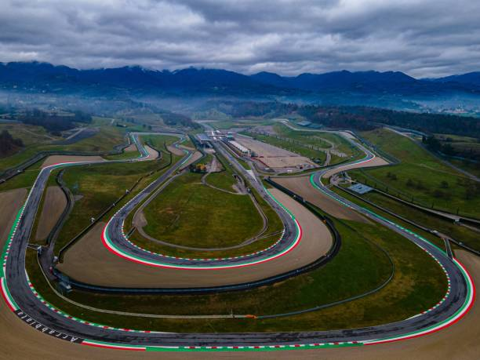

MotoGP – Información del circuito
Datos generales del circuito
- Nombre: Autodromo Internazionale del Mugello
- Longitud del circuito: 5243 metros
- Anchura: 12 metros
- Localidad: Borgo San Lorenzo
- País: Italia
- Patrocinador: Brembo
- Fecha: 2025-06-22
- Hora: 15:00 CET
- Número de vueltas: 22

Panorámica del circuito
Onboard vuelta rápida
Vencedor tras la carrera
- Nombre: Marc Márquez
- Tiempo: 2469.214 segundos
Podium tras la carrera
- Posición 1:
- Piloto: Marc Márquez
- País: España
- Puntos: 545
- Posición 2:
- Piloto: Álex Márquez
- País: España
- Puntos: 467
- Posición 3:
- Piloto: Marco Bezzecchi
- País: Italia
- Puntos: 353